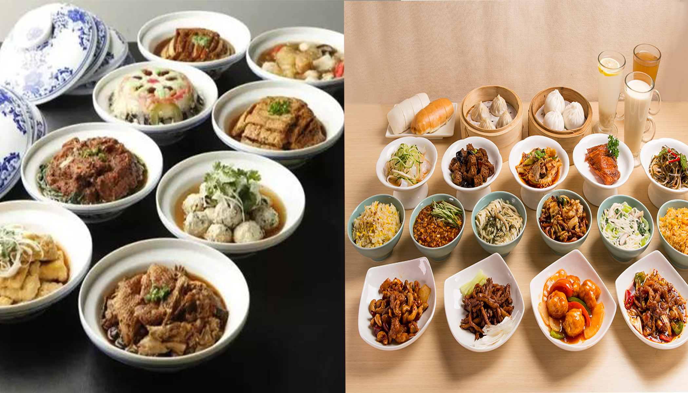
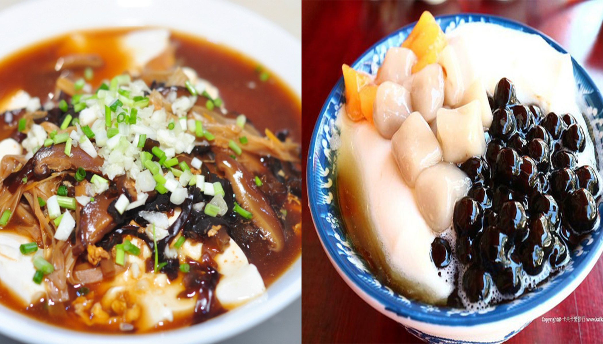
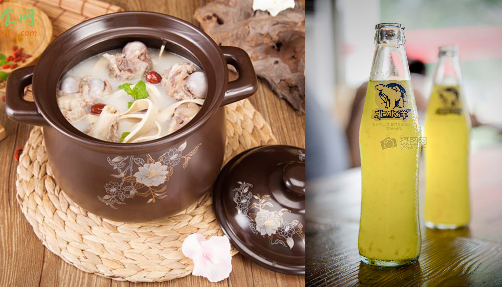
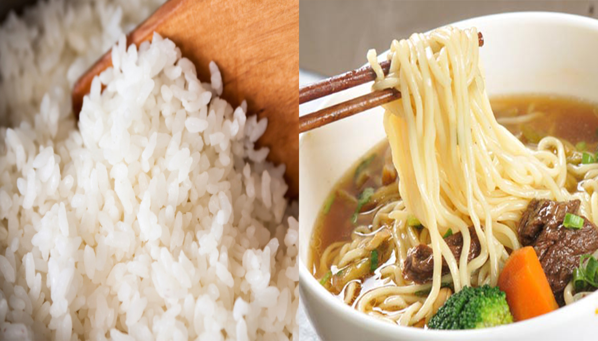

1. Which flavor do you like for ZongZi (Sticky Rice Dumpling) ? Sweet Salty
2. Which is the reguler size of a dish？  Bigger Smaller
3. Which flavor do you like for Douhua (Tofu Pudding)?  Salty Sweet
4. Do you like to have soup for evey dinner?  Yes No
5. Rice or Noodle?  Rice Noodle